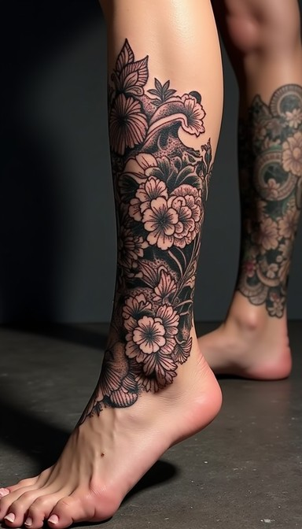
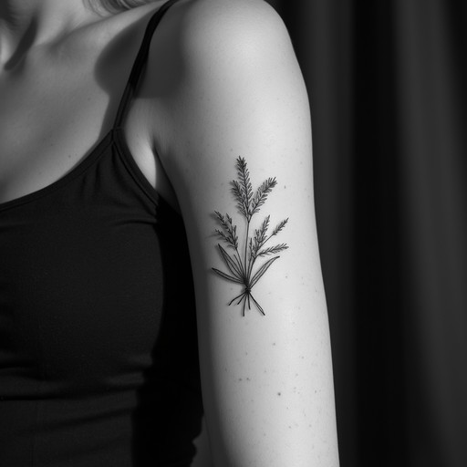
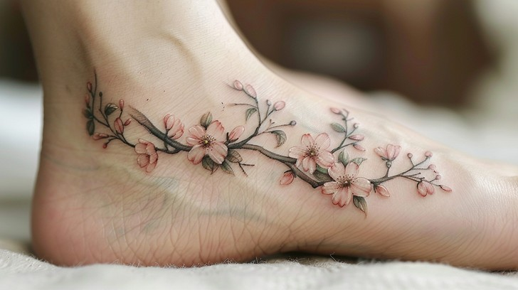

Tatuaje floral
Artista: Mariela Garcia
Estilo: Realista · Pierna

Artista: Mariela Garcia
Estilo: Realista · Pierna

Artista: Jose Martin
Estilo: Minimalista · Brazo

Artista: Sofia Martinez
Estilo: Japones · Tobillo